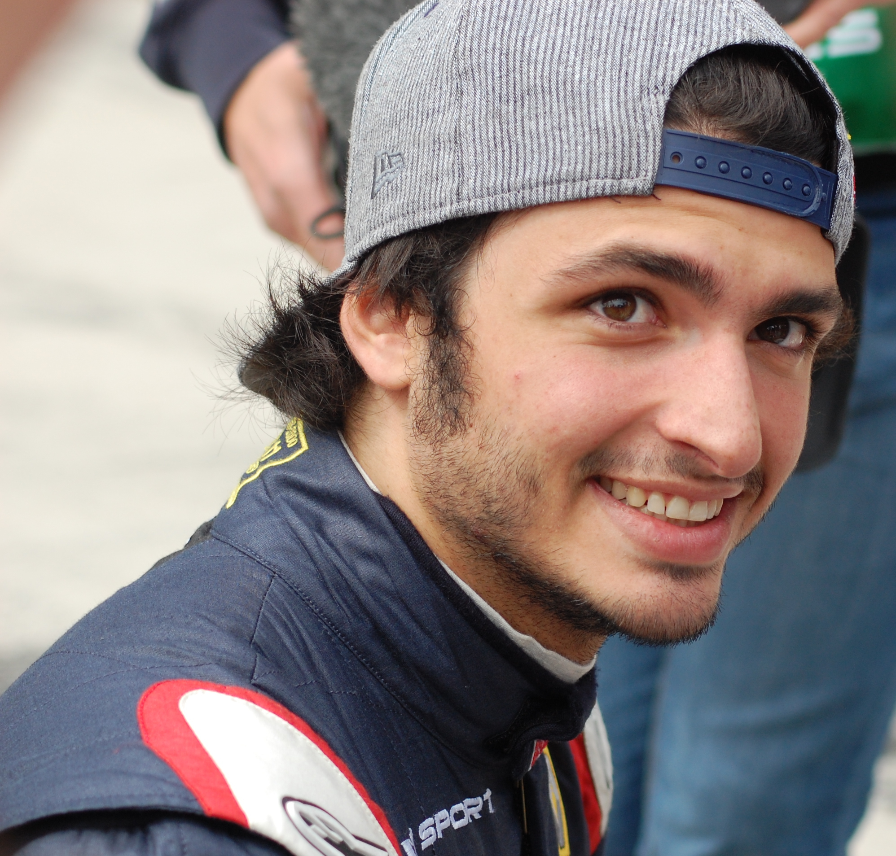
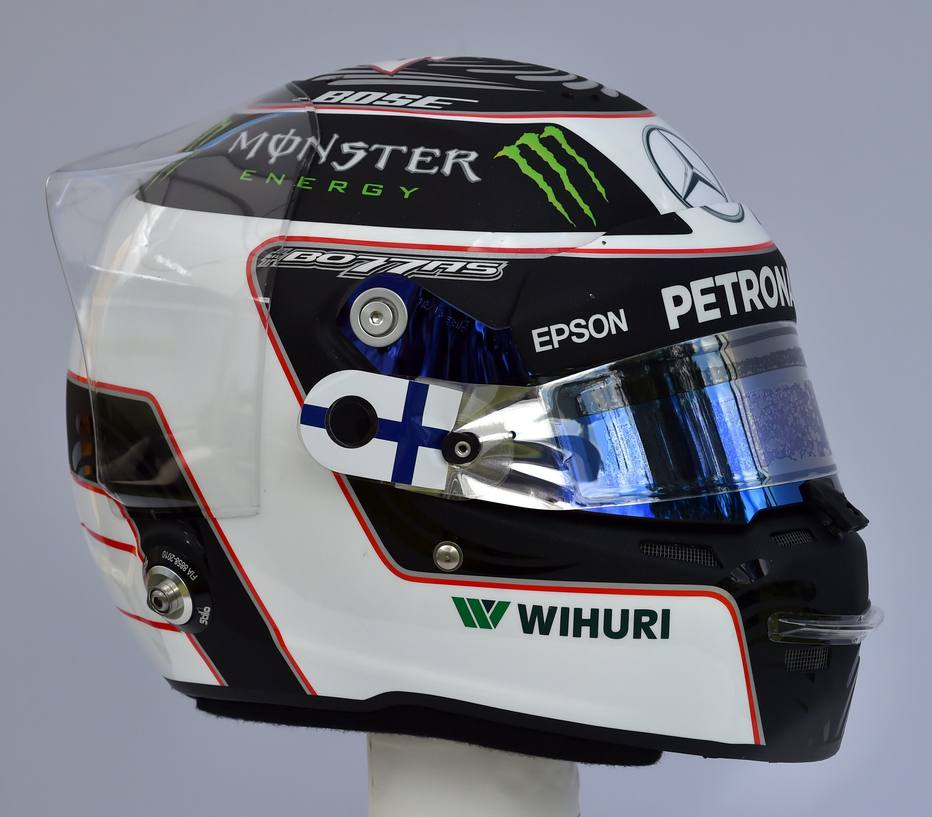

Quiz Formula
Quem foi o vencedor do Campeonato do Mundo de F1 do ano 2017 :
Lewis Hamilton X
Sebastian Vettel
Fernando Alonso
Daniel Ricciardo
Que piloto terminou na sexta posição na Corrida em Barcelona :
Carlos Sainz
Nico Hulkenberg X
Jolyon Palmer
Daniil Kyvat
Quem é este piloto :

Esteban Ocon
Fernando Alonso
Romain Grosjean
Carlos Sainz Jr X
Porque que o piloto Daniil Kyvat esteve em Problemas no Inicio da Corrida em Montreal :
Ultrapassou carros ilegalmente na linha de começo
Causou 1 colisão na primeira curva
Começou antes do sinal de partida X
Na corrida de Baku Lance Stroll tornou-se o mais jovem a :
Marcar 1 ponto no campeonato do mundo
Acabar no Podio X
Começar nos primeiros lugares da linha de partida
Williams tornou-se uma das quatras equipa a realizar o quê em Monza(Itália)?
Ganhar 1 Grande Prémio
Saiu da Pole Position
Começou no primeiro lugar na linha de partida X
Na corrida de Singapore quais dois pilotos registaram os seus melhores resultados da carreira
Carlos Sainz e Daniil Kyvat
Carlos Sainz e Jolyon Palmer X
Daniil Kyvat Jolyon Palmer
De quem é este capacete:

Valtteri Bottas X
Antonio Giovinazzi
Lance Stroll
Quem ficou em ultimo lugar no Campeonato do Mundo de F1
Brendon Hartley X
Antonio Giovinazzi
Pierre Gasly
Qual foi a primeira corrida do Campeonato de Formula1 de 2017
Brasil
Monaco
Austrália X